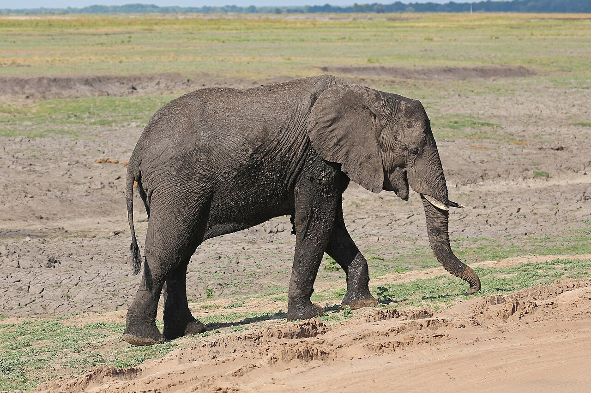

SFM Approach · Protected areas & connectivity · Mozambique

Protected Areas & Buffer-zone Management
Mozambique’s core theme — pairing a protected core with sustainable use in the buffer

African elephant (Loxodonta africana) in mopane — a flagship of one of Africa’s great large-mammal regions, and the connectivity protected areas exist to keep linked. Photo: Bernard Gagnon, CC BY-SA 4.0, via Wikimedia Commons
What it is
Mozambique’s championed theme pairs a protected core with sustainable use in the surrounding buffer — the connective tissue of a working landscape. It supports conservation-compatible livelihoods around reserves, transboundary corridors, and community fire and harvest rules across one of Africa’s great large-mammal regions.
How it works
- Protect a conservation core while enabling sustainable use in the buffer zone
- Support conservation-compatible livelihoods so people and wildlife share the woodland
- Maintain corridors and transboundary connectivity across borders and fragments
- Apply early-season burning and community limits on the mopane-worm and fuelwood harvest
- Plan land use so the protected core, buffer and corridors hold together
Key facts
- Champion country
- Mozambique
- Approach
- Protected core + sustainable-use buffer
- Tools
- Corridors · early-season fire · harvest rules
- Co-benefits
- Conservation-compatible livelihoods · connectivity
- Region
- One of Africa’s great large-mammal regions
Why it matters
A protected core only survives if the land around it works for people too. Pairing protection with sustainable use in the buffer — and keeping corridors open — is how the miombo–mopane stays both a wildlife region and a lived-in landscape.
WOCAT classification
- Measures
- MManagement
- WOCAT group
- Area protection / connectivity management
- Degradation addressed
- Habitat fragmentationLoss of biodiversity
Classified per the WOCAT SLM-Technologies classification.
✦Source and links
- • Protected areas, buffer zones and connectivity (profile)
- • Managing the woodland — and bringing it back
- • Life in the woodland
Sources (APA, 7th ed.).
- Frost, P. (1996). The ecology of miombo woodlands. In B. Campbell (Ed.), The miombo in transition: Woodlands and welfare in Africa (pp. 11–57). Center for International Forestry Research (CIFOR).
- McNicol, I. M., Ryan, C. M., & Mitchard, E. T. A. (2018). Carbon losses from deforestation and widespread degradation offset by extensive growth in African woodlands. Nature Communications, 9, 3045. https://doi.org/10.1038/s41467-018-05386-z